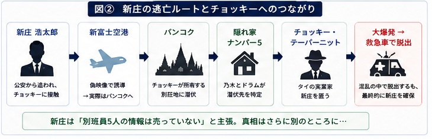
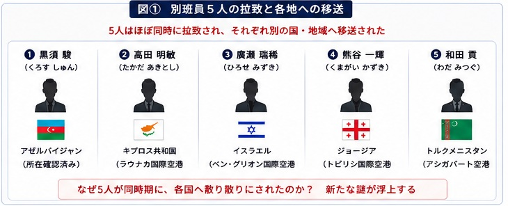
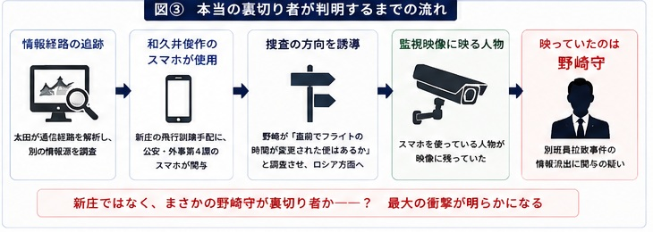

新庄の潔白、長野専務の正体、そして野崎への疑念。
第2シリーズの本筋が動き出す
キプロスでアリを確保した乃木は、新庄の行方を追ってタイへ。追跡の先で事件の構図が反転し、最後には乃木と野崎の関係を根本から揺るがす疑惑が浮上します。

1. 日本橋の三越本店にて
日本橋の三越本店で野崎守は乃木と接触。別班員の拉致について情報交換し、双方ともに関与したのが新庄だと予測します。
ここで重要なのは、新庄の行方でした。第2話でアリから得た情報によって、新庄がタイに逃亡していることが分かります。
新庄はベキの脱出を手助けしたことで、すでに公安から追われる立場。乃木にとっては、「別班員5人の拉致にも関わっているのか」を直接確かめる絶好の機会になります。
2. 新庄浩太郎はタイの大富豪に匿われていた
新庄は、タイの大富豪チョッキー・テーパーニットを頼って逃亡していました。
ここで少し意外なのが、新庄とチョッキーの関係です。チョッキーは新庄を単なる金で雇われた逃亡者としてではなく、かなり強く思っていました。新庄を守るためなら、自分の屋敷まで使う。
乃木とドラムは新庄を確保するためタイへ向かい、第2話で別荘地の隠れ家が「ナンバー5」であると特定。一方、新庄も自分が追われていることを察知し、逃げる準備を始めます。
3. 乃木とドラム、新庄浩太郎を追い詰める
乃木たちは新庄の潜伏先を包囲。ここではドラムも大活躍します。しかし、新庄は簡単には捕まりません。
追い詰められた新庄が選んだのは、正面から戦うことではなく、徹底的に混乱を起こして逃げること（カオス）でした。そのために使ったのが、意外な方法でした。
4. 新庄浩太郎が仕掛けた「大爆発」
新庄は自分が死んだように見せかけるため、ケチャップを血のように使います。そして地下へ逃げ込み、屋敷を爆破します。
当初の計画では、それほど大規模な爆発になる予定ではありませんでした。ところが実際には想定以上の大爆発。屋敷の上階が吹き飛ぶほどの大惨事になります。
それでも新庄とチョッキーは、混乱に乗じて救急車で脱出。乃木は一見すると逃げられたように見えます。
しかし、ここで乃木が見せた表情が印象的でした。乃木は、逃げられたことに怒るどころか、わずかに笑う。
つまり、最初から新庄を逃がすことまで計算していた可能性があります。この時点で、乃木はすでに新庄の次の行動まで読んでいたのでしょう。

5. 新庄浩太郎を確保する
結局、新庄浩太郎は乃木たちの手から完全に逃げ切ることはできませんでした。
拘束された新庄は、乃木のもう一つの人格であるFから厳しい尋問を受けます。そこで新庄は、自分は別班員5人の情報を売っていないと主張します。
しかも、両親まで巻き込まれているにもかかわらず、最後まで主張を変えません。
さらに意外だったのは、新庄自身が別班の存在を否定しなかったこと。むしろ、日本が世界の中で対等に生きていくためには、別班のような非公認組織が必要だという考えまで示します。
ここで乃木が抱いていた「新庄が別班員を売ったのではないか」という疑いが崩れ始めます。
6. 新庄浩太郎は別班員を売っていなかった
ブルーウォーカー太田梨歩が新庄のスマートフォンを徹底的に調べます。しかし、そこには別班員5人の情報を外部へ流した痕跡がありませんでした。
つまり、新庄は別班員拉致事件の情報提供者ではなかった。
第1話から新庄が怪しい人物として追われてきましたが、ここで一つの大きな謎が解けます。
ここから事件の焦点が変わります。「新庄を捕まえれば終わる事件」ではありませんでした。本当の裏切り者は、別の場所にいる。

7. チョッキーが語った新庄を守る理由
さらにチョッキーから驚くべき話が出ます。新庄は、別班員の情報を提供するよう持ち掛けられていました。しかし新庄は、それを拒否していました。
理由は、「日本を売るような真似はできない」というもの。
では、なぜチョッキーはそこまで新庄を守ったのか。答えは非常に単純でした。
国家の陰謀や諜報活動という重い話が続く中で、ここだけは非常に人間臭い。AIハヤトもチョッキーの言葉について99％の確率で真実と判定します。
新庄が別班を裏切っていなかったことと、チョッキーが新庄を愛していること。この二つが、ここでつながります。
8. 長野専務の正体
第2話最後にホテルに現れたのは、丸菱商事の長野専務でした。乃木と長野は、会社では上司と部下。しかし二人はすぐに陸上自衛隊式の敬礼を交わします。
ここで明らかになります。長野は別班員だった。
しかも単なる隊員ではなく、東南アジア方面を統括する別班員でした。
第1シリーズで長野には、妙に軍事的な知識があることや、乃木に対する不可解な態度など、いくつかの伏線がありました。それらがここで一本につながります。
乃木自身も長野が別班だったことを知らず、長野も乃木が別班員だとは知らなかった。同じ組織に所属しながら、お互いの正体を知らない。別班という組織の特殊性が改めて浮かび上がります。
9. 長野とブルーウォーカー太田梨歩の過去
長野の登場で、もう一つの過去も明らかになります。第1シリーズで問題になった、長野とブルーウォーカー太田梨歩の関係です。
太田が長野に近づいたことには別の理由がありました。太田は、丸菱商事に潜んでいたモニター・山本から身を守るため、長野に近づいていた。つまり、単純な恋愛関係ではありませんでした。
しかしドラムは、そんな事情をすぐには納得できません。太田を大切に思っているドラムは、長野に対して強烈な警戒心を見せます。ここは重い展開が続く第13話の中で、かなりコミカルな場面です。
長野自身も余裕のある態度でドラムを受け流します。しかし乃木との会話では、長年別班任務を続けてきた人間らしい言葉を残します。
任務に生きる乃木にとって、この言葉はかなり重い。父・ベキを失い、薫やジャミーンとの関係も抱えている乃木にとって、家族や愛する人を持つことの意味を改めて考えさせる言葉でした。
10. 本当の裏切り者が判明する
そして、第13話最大の衝撃がここです。
新庄が別班員5人を売っていないことが分かったことで、太田は別の情報経路を調べ始めます。すると、別班員の情報を追う通信経路の中に、意外な接続が見つかります。
さらに、新庄が逃亡するために必要だった飛行訓練について、公安の外事第4課にいる和久井俊作のスマートフォンが使われていたことが判明します。
ここで乃木は、第12話で野崎が口にしていた言葉を思い出します。
野崎がその情報を調べさせたことで、乃木たちの捜査はロシア方面へ向かってしまっていました。しかし実際には、新庄はタイにいる。つまり野崎の情報によって、捜査の方向が意図的にずらされていた可能性が出てきます。
さらに監視映像には、和久井のスマートフォンを使っている人物の姿が映っていました。その人物を見た乃木の表情が変わり、ドラムも驚愕します。
第1シリーズから乃木憂助と何度も共闘し、互いに命を預けるような関係になっていた野崎。その野崎が、別班員5人を拉致した事件に関与していた可能性が浮上します。
新庄ではなかった。長野でもなかった。そして、まさかの野崎守。
野崎はエルサレムにいました。古代の浴場跡で待ち受けていた謎の人物から、上層部が喜んでいるとヘブライ語で告げられます。ここで第13話は終了します。
第13話終了時点では「野崎が別班員5人を拉致した」と確定したわけではありません。現時点で分かっているのは、別班員拉致事件につながる情報が野崎側から流れていたこと、そして野崎がその情報経路に関わっているように見えるところまでです。

第13話で新たに分かったこと
| 項目 | 第13話終了時点 |
|---|---|
| 新庄浩太郎 | 別班員5人の情報を売っていなかった |
| チョッキー | 新庄を愛しており、逃亡を支援していた |
| 長野利彦 | 東南アジア方面を統括する別班員だった |
| 太田梨歩 | 長野との関係には山本から身を守る目的があった |
| 別班員拉致事件 | 新庄以外に情報を流した人物がいる |
| 野崎守 | 拉致事件の情報流出に関与している疑いが浮上 |
| 物語 | ここから「別班奪還」へ向けた本格的な物語へ移行 |
第13話の見どころ
第13話で一番大きかったのは、やはり長野専務が別班だったことと、最後の野崎の裏切りを思わせる展開です。
長野については、第1シリーズを見ていると「もしかして別班では？」と思わせる場面がいくつかありました。それが今回、正式に回収されました。
しかも、乃木と長野は互いが別班だと知らなかった。この設定によって、「別班員だからといって、別班員同士が全員の正体を知っているわけではない」ということも分かります。
そして、それ以上に衝撃だったのが野崎です。第1シリーズでは、乃木と野崎は何度も敵対しながら、最後には互いを認め合う関係になっていました。
だからこそ、第13話の最後で「野崎守が裏切り者なのか？」という展開は、単なる黒幕発覚以上の意味を持っています。
ここから乃木による「別班奪還」へ向けた本格的な物語が始まると感じさせる一方、野崎についてはまだ断定できません。
「野崎は本当に裏切ったのか？」という新たな最大級の謎を残して、第14話へ続きます。第1シリーズから続く「敵か味方か」というテーマが、第2シリーズではついに野崎自身にまで向けられた、非常に重要な回でした。
第14話「野崎は本当に裏切ったのか？」